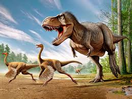

Dinos
01/25/2019
Dinosaurs are a diverse group of reptiles[note 1] of the clade Dinosauria. They first appeared during the Triassic period, between 243 and 233.23 million years ago, although the exact origin and timing of the evolution of dinosaurs is the subject of active research. They became the dominant terrestrial vertebrates after the Triassic–Jurassic extinction event 201.3 million years ago; their dominance continued through the Jurassic and Cretaceous periods. The fossil record demonstrates that birds are modern feathered dinosaurs, having evolved from earlier theropods during the Late Jurassic epoch. As such, birds were the only dinosaur lineage to survive the Cretaceous–Paleogene extinction event approximately 66 million years ago. Dinosaurs can therefore be divided into avian dinosaurs, or birds; and non-avian dinosaurs, which are all dinosaurs other than birds. Dinosaurs are a varied group of animals from taxonomic, morphological and ecological standpoints. Birds, at over 10,000 living species, are the most diverse group of vertebrates besides perciform fish. Using fossil evidence, paleontologists have identified over 500 distinct genera and more than 1,000 different species of non-avian dinosaurs. Dinosaurs are represented on every continent by both extant species (birds) and fossil remains. Through the first half of the 20th century, before birds were recognized to be dinosaurs, most of the scientific community believed dinosaurs to have been sluggish and cold-blooded. Most research conducted since the 1970s, however, has indicated that all dinosaurs were active animals with elevated metabolisms and numerous adaptations for social interaction. Some were herbivorous, others carnivorous. Evidence suggests that all dinosaurs were egg-laying; and that nest-building was a trait shared by many dinosaurs, both avian and non-avian.
Cars
11/14/2019
A car (or automobile) is a wheeled motor vehicle used for transportation. Most definitions of cars say that they run primarily on roads, seat one to eight people, have four tires, and mainly transport people rather than goods.[2][3] Cars came into global use during the 20th century, and developed economies depend on them. The year 1886 is regarded as the birth year of the modern car when German inventor Karl Benz patented his Benz Patent-Motorwagen. Cars became widely available in the early 20th century. One of the first cars accessible to the masses was the 1908 Model T, an American car manufactured by the Ford Motor Company. Cars were rapidly adopted in the US, where they replaced animal-drawn carriages and carts, but took much longer to be accepted in Western Europe and other parts of the world.[citation needed] Cars have controls for driving, parking, passenger comfort, and a variety of lights. Over the decades, additional features and controls have been added to vehicles, making them progressively more complex, but also more reliable and easier to operate.[citation needed] These include rear reversing cameras, air conditioning, navigation systems, and in-car entertainment. Most cars in use in the 2010s are propelled by an internal combustion engine, fueled by the combustion of fossil fuels. Electric cars, which were invented early in the history of the car, became commercially available in the 2000s and are predicted to cost less to buy than gasoline cars before 2025.[4][5] There are costs and benefits to car use. The costs to the individual include acquiring the vehicle, interest payments (if the car is financed), repairs and maintenance, fuel, depreciation, driving time, parking fees, taxes, and insurance.[6] The costs to society include maintaining roads, land use, road congestion, air pollution, public health, health care, and disposing of the vehicle at the end of its life. Traffic collisions are the largest cause of injury-related deaths worldwide.[7] The personal benefits include on-demand transportation, mobility, independence, and convenience.[8] The societal benefits include economic benefits, such as job and wealth creation from the automotive industry, transportation provision, societal well-being from leisure and travel opportunities, and revenue generation from the taxes. People's ability to move flexibly from place to place has far-reaching implications for the nature of societies.[9] There are around 1 billion cars in use worldwide. The numbers are increasing rapidly, especially in China, India and other newly industrialized countries.[10]